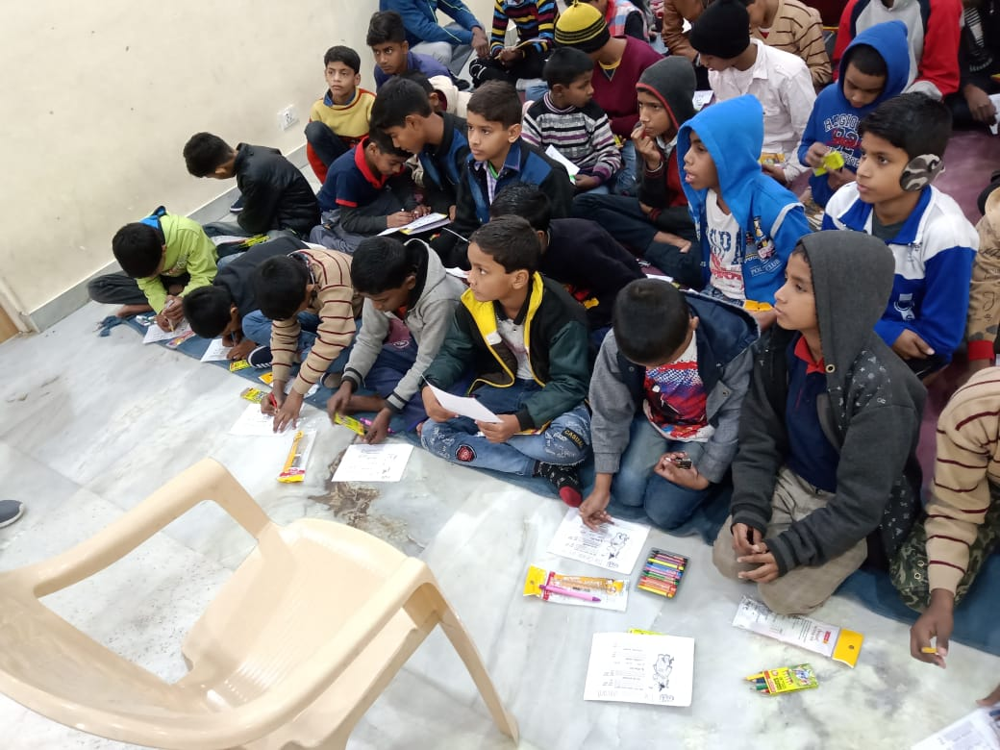

- 
-

-

The Organization for Youth Empowerment (OYE) is a volunteer-run youth-initiative inspired by a vision of a society where youth have a powerful voice and the knowledge and resources to use that voice to create positive change in their lives and their communities.
We at OYE work towards a theory of youth becoming the change through building the self-confidence, leadership, and knowledge of not only women and girls, but also men and boys, about their sexuality and human rights, and creating feminist as well as meninist platforms to challenge oppressive norms and orthodox structures.
Through dynamic and participatory workshops, OYE seeks to empower young people to make smart and healthy decisions for their futures. We have developed an effective youth leadership and life skills development curriculum, divided into three age-specific levels and different modules encompassing several themes.
OYE’s core youth-led programs create spaces for adolescents to engage with each other, develop skills and give back to their communities. We believe that empowered and engaged young people are the key to building stronger, more resilient communities. Our hands-on, youth-led approach ensures that our projects respond to the realities of the youth we engage and creates opportunities for them to develop leadership, creative and critical thinking, decision-making and effective communication, among other significant life skills through our worksheets and activities.
Providing young people with opportunities to lead youth through gender and education-centric projects in local schools and communities, we object to develop a broader understanding of interpersonal development amongst not only the youth but also our own volunteers, through physical, social and political environments and initiating interventions that enable and empower them to control these factors.
The OYE team is a collection of empowered youth leaders and experienced professionals. We are united by our passion and conviction that educating, empowering and engaging young people is key to sustainable and equitable development in India.
.jpeg)
Pahul, OYE's founder and executive director, is a 16-year-old social entrepreneur with a vision to transform the world in a better way. Extremely talented, with impeccable writing, singing and painting skills, she believes music is our intercession for those sentiments beyond rational description. She takes every project very seriously and deliverers everything with nothing less than perfection. Besides being an environment enthusiast, she is also trained in yoga and has had a lot of academic awards under her belt. Having a deep sense of social welfare and community well-being, Pahul works diligently for the cause which even motivates her team to reciprocate positively. She is the saving grace of OYE who holds the team together strongly.

Jyona, the co-founder and content strategist for OYE, is a 17-year-old dynamic overseer who aims at combatting the myopic visionary of social norms. An aspiring nutritionist, who believes in the strength of nutrition in transforming lives, she is an extensive hobbyist and bibliophile who likes to paint, dance, write and do photography. She has proved her debating and speaking skills in many national level debates and youth parliaments, showcasing her strong opinionated nature. A great admirer of Bangtan Sonyeondan (BTS), a K-pop band for their deep and inspiring messages of loving yourself, Jyona creates fun and engaging content for OYE worksheets with a similar message. She is truly an asset to OYE.

With a ‘never say no’ attitude and a firm belief that theoretical knowledge doesn’t suffice for a holistic exposure to any globally sensitive issue, Jayant, a perspicacious 16-year old, with a strong academic command over his subjects, is optimistic, enthusiastic and extremely motivating. His ideology exhibits a blend of kindness and hard-work, with imagination, which adds core value to the functionality of OYE. He is versatile in nature, and comes of great importance while networking and reaching out to communities. He makes a perfect fit to Head Community Outreach and communications at OYE.
.jpg)
An insightful individual with a vast imaginative outlook, Pratisruti Karmakar is best at her job as the official illustrator of OYE. She transforms the verbal ideas into beautiful graphics with a wide appeal and alluring aesthetics. Beside digital art, Pratisruti is an extensive linguist and loves to read and write. Her command over language is commendable which is enhanced by her fine handwriting skills. She also loves to watch Anime and listen to music. With the never-ending list of qualities, Pratisruti Karmakar perfectly fits as the social media and marketing head of OYE.
A tech and AI enthusiast, Nitish, the website and digital executive of OYE is an indefectible fit for heading this department. With an incessant amount of achievements in this field, Nitish proves to be the best in what he does. Other than being a techie, he loves gaming, reading and watching anime. Nitish, being insightful and logical, his inputs in the projects are of great importance to the whole team. From website management to digital marketing, Nitish is the ideal fit for this position.

Sanchaita, a 15-year-old who firmly keeps herself in front of others aiming to address the issues that are bothersome to her as well as the whole society. Being assertive with strong views, Sanchaita loves debating and writing. She is also a trained Kathak dancer and loves to spend time with her dog Coco. Another BTS army in the team, Sanchaita takes the underlying messages of their songs very seriously and analyse them beautifully. Besides her hobbies, Sanchaita is also passionate about spreading awareness and works enthusiastically for the cause. She is the volunteer-coordinator at OYE. She is the youngest member of our core team, being the point of interaction for all volunteers and the core team. Helping people identify their forte and providing them with outlets and opportunities to contribute to community service though OYE, Sanchaita fulfils her goal to empower and feel empowered along the process.

Vanshika, OYE's official photographer and videographer is a self-taught photophile who believes in the power of photography to increase her patience and observation skills. Vanshika is an ardent supporter of the say- photographs are a story without words. She is best at her job and captures every moment beautifully with her clicks on the camera shutter. She is truly a dedicated member and we feel immensely fortunate to have her in the team.
BIG DADDY